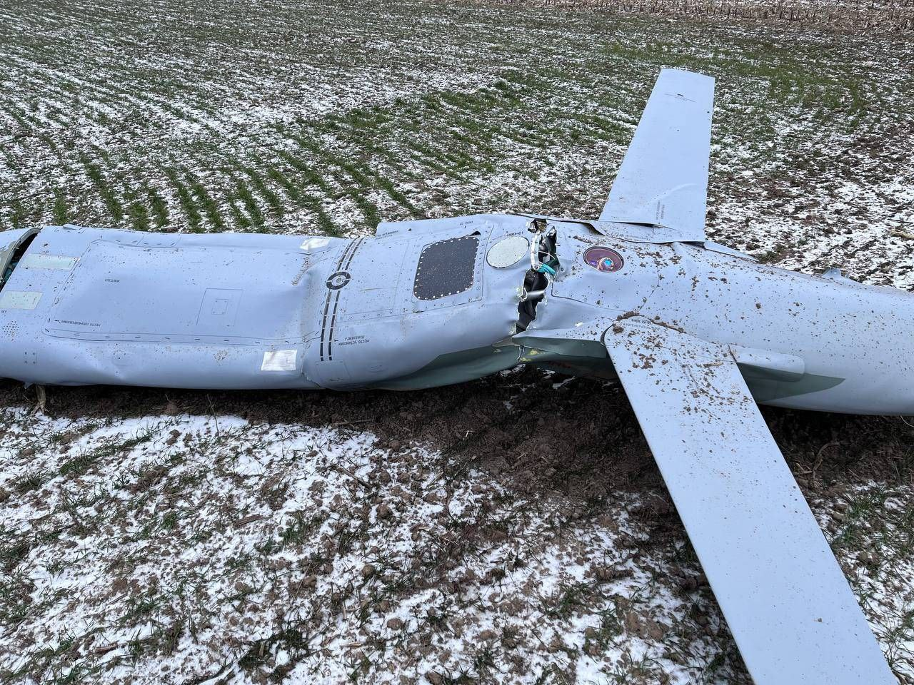

Russian missiles fall in Poland during attack on Ukraine: Tusk speaks of «intentional provocation», Trump says it was «by mistake»

Archive image.jpg){kind=link}
Two Russian missiles and a jet-powered drone entered Polish airspace in the early hours of Friday 20 November, during another massive Russian attack on Ukraine. They came down in three villages in the south-east of the country — Molodycz, Rudnik nad Sanem and Nowy Lipowiec —, less than 50 kilometres from the Ukrainian border. No one was injured, according to the Polish authorities, quoted by AFP and the Diário de Notícias.
One of the objects was identified as a Kh-101 cruise missile and fell in Nowy Lipowiec at around 06:30 local time; a resident told AFP that the house «shook all over». Rzeszów airport suspended flights for a while and NATO scrambled fighter jets. The Polish prime minister, Donald Tusk, says he is certain the weapons came from Russia and speaks of an «intentional provocation»: the area is close to where thousands of European soldiers are holding military exercises, at Nowa Dęba.
Donald Trump sees things differently. In a telephone interview with Fox News, a day after sitting down with Putin at the Shenzhen summit, he said the Russian leader has been dropping drones and «a couple of small missiles» on Poland «by mistake». Tusk replied that he does not always agree with Washington's reading, which he finds too moderate, but promised to give the US access to the debris. NATO's secretary-general, Mark Rutte, condemned «serious violations» of Polish airspace and called them «clearly dangerous».
What comes next? Tusk asked Rutte for recommendations to strengthen the defence of the Alliance's eastern flank, and Rutte is expected in Warsaw this Saturday, according to AFP. In Ukraine, the same night's attack killed at least eight people, according to AFP (the Kyiv Post reports nine dead and 28 injured), and left many homes without power. By the time AFP published, the Kremlin had not commented.
Sources and verification · 2 independent sources
Sources: AFP via Yahoo News – «Warsaw says Russian missiles hit Poland, denounces 'intentional provocation'» (20 Nov), Diário de Notícias – «Trump diz que mísseis russos caíram na Polónia "por engano" e contraria Varsóvia» (20 Nov), Kyiv Post – «Zelensky Calls Putin a 'Killer'…» (20 Nov)
Confirmed by two independent sources. Villages, number of objects, absence of injuries, statements by Tusk and Rutte and suspended flights at Rzeszów confirmed by AFP (via Yahoo News, 20 Nov) and the Diário de Notícias (20 Nov). Identification of the Kh-101, time of the fall, the resident's account, Rutte's visit to Warsaw and absence of comment from the Kremlin according to AFP. Trump's statement to Fox News according to the DN and AFP; we did not consult the original interview. The death toll in Ukraine differs: at least eight (AFP) or nine dead and 28 injured (Kyiv Post, Ukrainian authorities). We did not consult the Polish Armed Forces directly.

.jpg){kind=link}